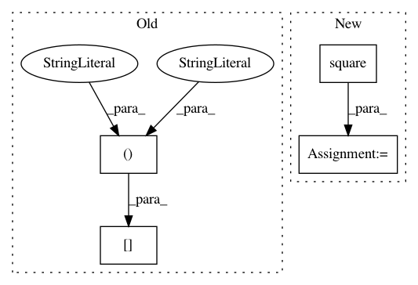

fe8a6175dc98c7bc3b667fe88afcb5c2a4c94169,kapre/stft.py,Stft,call,#Stft#Any#Any#,144
Before Change
def call(self, x, mask=None):
"""computes spectrorgram ** power."""
output = self._spectrogram_mono(x[:, 0:1, :])
if self.is_mono is False:
for ch_idx in range(1, self.n_ch):
output = K.concatenate((output,
After Change
def call(self, x, mask=None):
"""computes stft ** power."""
for fr_idx in range(self.n_frame):
X_frame_power = K.sum(K.square(fft.rfft(
self.fft_window * x[:, :, fr_idx * self.n_hop :
fr_idx * self.n_hop + self.n_fft]
)), axis=3, keepdims=True)
if fr_idx == 0:
output = X_frame_power
else:
output = T.concatenate([output, X_frame_power], axis=3)
if self.power_stft != 2.0:
output = K.pow(output, self.power_stft/2.0)
if self.return_decibel_stft:
output = backend.amplitude_to_decibel(output)
return output
In pattern: SUPERPATTERN
Frequency: 3
Non-data size: 4
Instances
Project Name: keunwoochoi/kapre
Commit Name: fe8a6175dc98c7bc3b667fe88afcb5c2a4c94169
Time: 2017-01-17
Author: gnuchoi+github@gmail.com
File Name: kapre/stft.py
Class Name: Stft
Method Name: call
Project Name: SheffieldML/GPy
Commit Name: adfa6de1d87baced85215985da9ed2ce671c2a93
Time: 2013-03-27
Author: james.hensman@gmail.com
File Name: GPy/kern/rbf.py
Class Name: rbf
Method Name: _K_computations
Project Name: GPflow/GPflow
Commit Name: 956ac38fd58a1ef65c18dffc06a22d2e628e3a16
Time: 2016-01-18
Author: james.hensman@gmail.com
File Name: testing/test_conditionals.py
Class Name: WhitenTestGaussian
Method Name: test_whiten